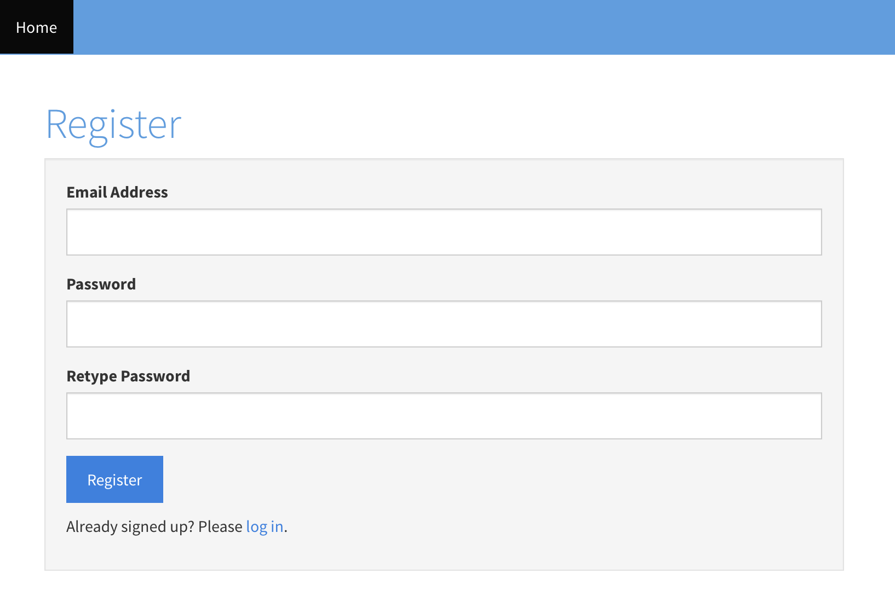

User
Employee > User
User is one essential entity for the application to work beginning from log in to team scheduling.
Add User
New user can be added via
Employee>User: Create tab or
| Field | Type | Description |
|---|---|---|
| Name | String | User/Employee fullname |
| Gender | Option | M for Male, F for Female |
| String | Email is required for users who need to login to the application. | |
| Password | String | Password in this form is plain text so other can see it. If you want user's password encrypted, use the below approach to create new users. |
| Roles* | Option | Select a role from the dropdown list or you can leave it as empty if you do not want the user to access the application. |
| Shift | Option | Select a shift for the user |
| Phone | String | User phone number |
| Active | YES/NO |
YES - User works for the company, NO - User no longer works for the company. |
| Is In | YES/NO |
YES - User is checked in, NO - User is out. |
| Image | PNG, JPG, JPEG | User photo |
Team Request(Scheduling) uses users with eitherleadorassemblerrole only. Other roles are excluded.
Loginpage >register for an accountlink at the bottom of the page.

View, Edit, and Delete
Same as others: Employees > User